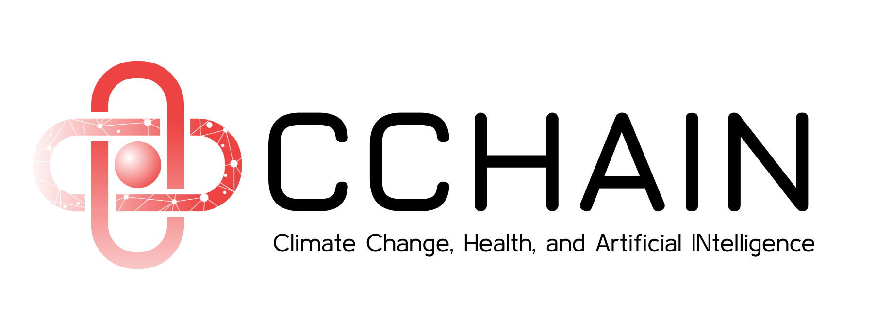

Linking Village-Level Data on Climatic Impact-Drivers, Socioeconomic Vulnerability, and Environmental Conditions to Health Impacts across 12 Philippine Cities
The Project CCHAIN dataset is a validated, open-sourced linked dataset containing 20 years (2003-2022) of health, climate, environment, and socioeconomic variables at the barangay (village) level across 12 Philippine cities.
Access the dataset
You may view a sample of the dataset in its linked form through the following links:
To download the full dataset, kindly accomplish the form below.
Project Team
Consortium members

Supported by
Contact Us
For general project inquiries, send a message to data-for-development@thinkingmachin.es